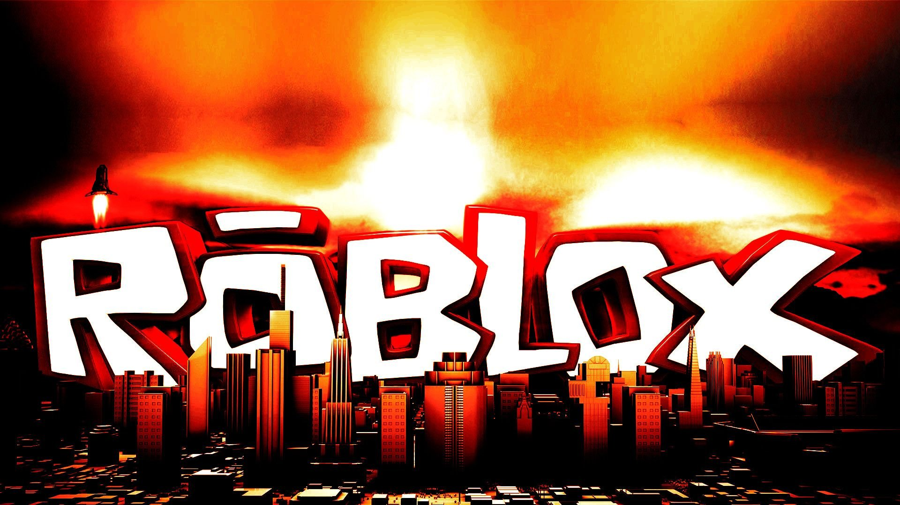

Сеттинг — это среда, в которой происходит действие компьютерной игры; место, время и условия действия.
Геймпле́й — компонент игры, отвечающий за интерактивное взаимодействие игры и игрока. Геймплей описывает, как игрок взаимодействует с игровым миром, как игровой мир реагирует на действия игрока и как определяется набор действий, который игра предлагает игроку.
Музыка в компьютерных и/или видеоиграх — это любые мелодии, композиции или саундтреки видеоигр.
Обратно на главную  robloxКомпьютерные игры являются одной из драматических форм, а их интерактивность — это вопрос степени участия, но не формы. Поэтому, как и другие формы, компьютерная игра имеет пять ключевых элементов: стиль, фабула, герой, декорации и тема. Все хорошие игры должны обладать некоторым развлекательным потенциалом, и в большинстве их он основан на классических законах драмы[13].
По сообщению сайта 3DNews, в 2011 году компьютерные игры были официально признаны правительством США и американским Национальным фондом искусств отдельным видом искусства, наряду с театром, кино и другими[14]. После этого разработчики получили право, наравне с представителями кинематографа, музыки, живописи и литературы, рассчитывать на государственные гранты в размере от 10 до 200 тыс. долларов. Данная финансовая поддержка позволит независимым специалистам и компаниям значительно активней реализовать концептуальные проекты
Геймеры Основная статья: Геймер В 2005 году более трёх часов в день играли около 25 % подростков; к концу 2010-х — около 45 %[15]. Специальные разработанные игры позволяют использовать игроков в научно-исследовательских работах[16].